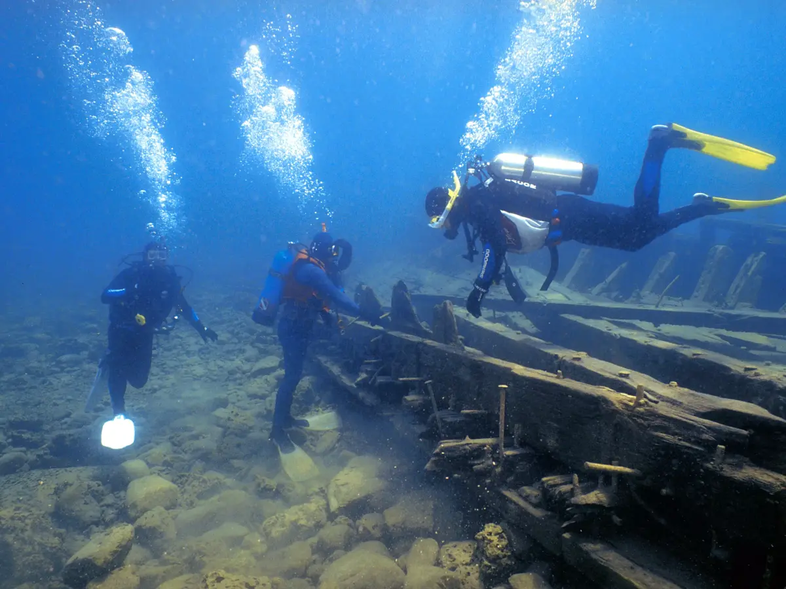
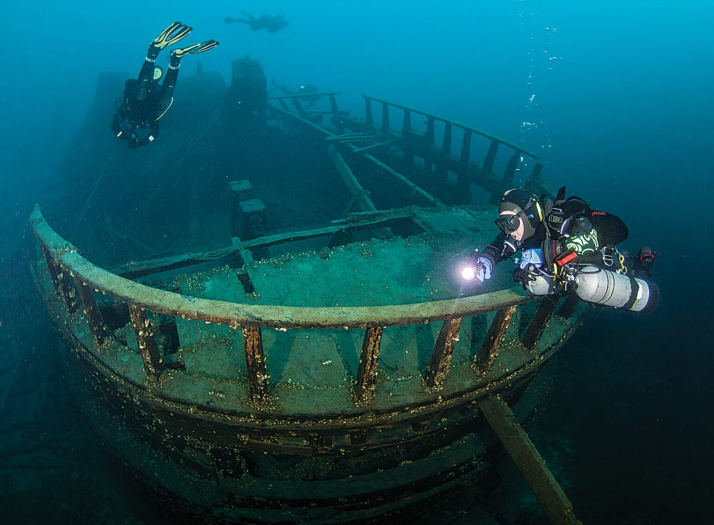
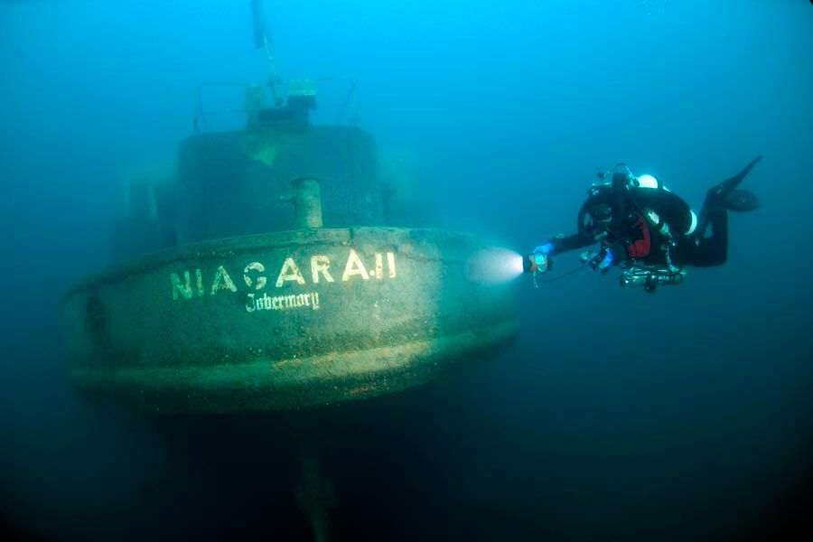
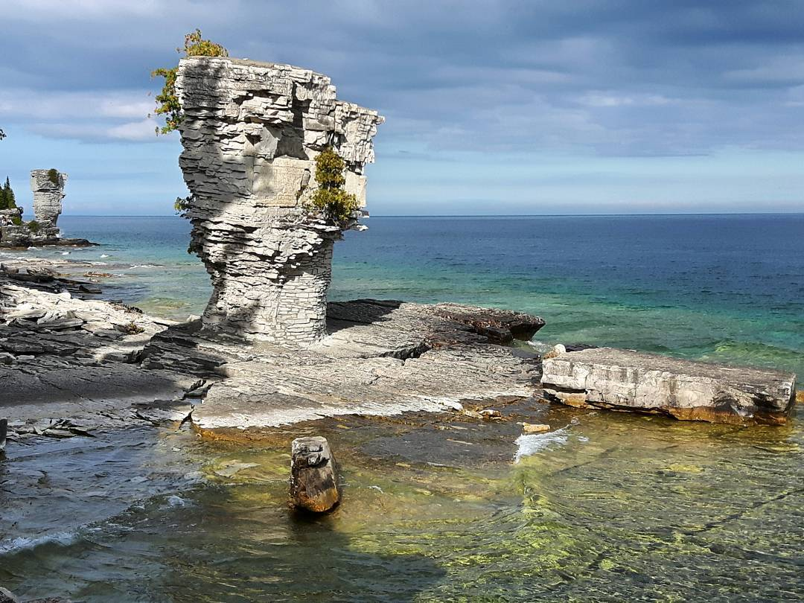
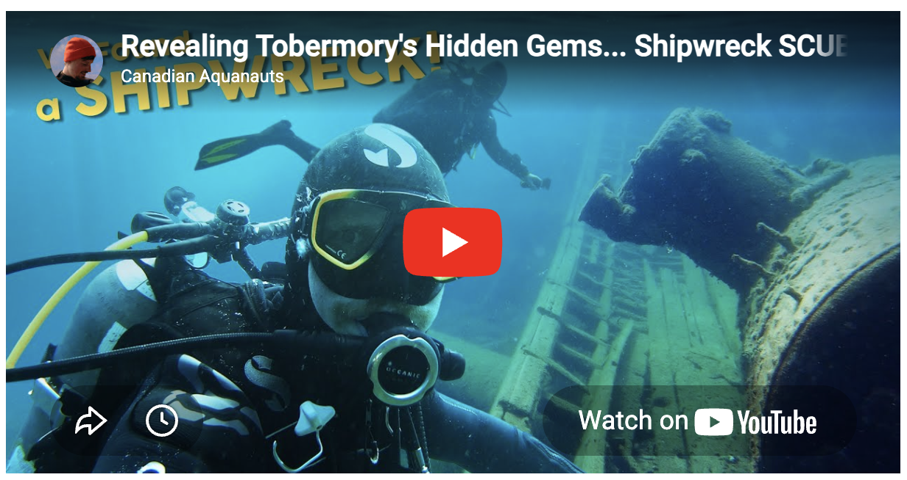
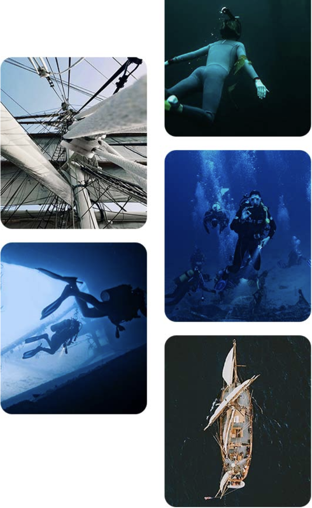
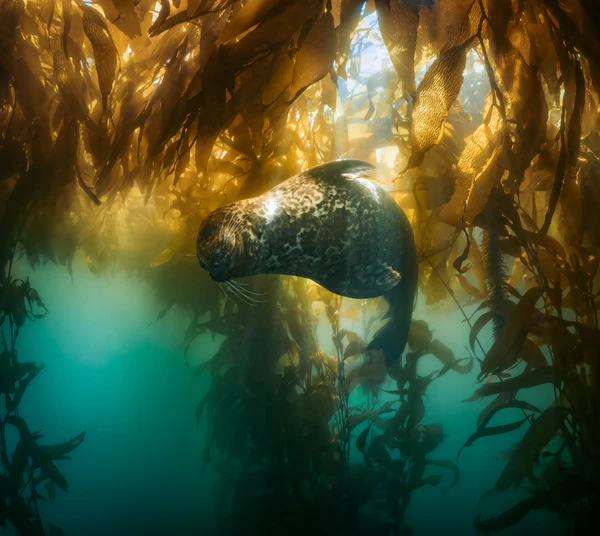
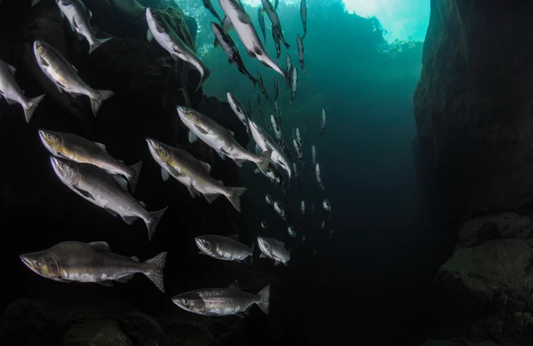
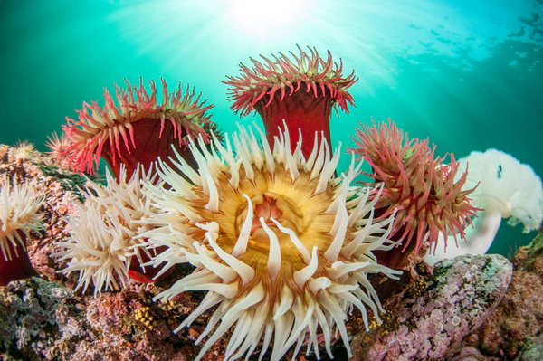

Explore Our Top Diving Destinations in Canada
Discover the best diving spots across Canada with us. Whether you're a beginner or an experienced diver, we have something for everyone.
Ontario
Tobermory: A Diver's Paradise
Shipwreck diving in Tobermory, Ontario is an unforgettable experience that feels like stepping into a living underwater museum. As you descend into the crystal-clear blue waters of Lake Huron, sunlight filters down to reveal the hauntingly beautiful outlines of historic ships resting silently on the lakebed. Perfectly preserved by the cold freshwater, wooden decks, rigging, and even intricate details remain frozen in time, allowing you to explore vessels that sank over a century ago as if they were only recently abandoned. With visibility often stretching for dozens of meters, you can glide effortlessly above entire wrecks, taking in their full scale in a single breathtaking view. Whether you’re gently snorkeling over shallow sites or venturing deeper into more advanced dives, every moment in Tobermory offers a sense of discovery, wonder, and connection to history that few places in the world can match.
Discover one of Canada’s most iconic diving destinations, where over 20 historic shipwrecks rest beneath crystal-clear freshwater. In Fathom Five National Marine Park, divers and snorkellers alike can glide above remarkably preserved wrecks like the Sweepstakes, with visibility so clear it feels like floating through time. The park offers a range of dive sites suitable for all skill levels, from shallow wrecks accessible to snorkellers to deeper, more technical dives such as the Arabia and the Forest City, where depths can reach over 100 feet. Visibility often exceeds 50 feet, creating an almost surreal experience where entire wrecks can be viewed in a single descent.




Tobermory Diving
Explore the rich underwater history and stunning marine life that makes Tobermory a premier diving destination in Canada. With its combination of historical intrigue, exceptional visibility, and diverse dive sites, Tobermory stands out as a must-visit destination for divers seeking an unforgettable underwater adventure in Canada.
Cite:https://teamlisk.com/explore-scuba-diving-in-tobermory-2/
Beyond the park, additional sites such as the City of Cleveland and the intentionally sunk Niagara II provide further variety. These dives offer everything from extended bottom time in shallow waters to complex exploration opportunities in deeper environments. The surrounding area also features underwater cliffs, caves, and unique geological formations that enhance the diving experience. With its combination of historical intrigue, exceptional visibility, and diverse dive sites, Tobermory stands out as a must-visit destination for divers seeking an unforgettable underwater adventure in Canada.
Why Tobermory is Ideal for Beginners:
Our local dive business partner and instructors provide guided dives, beginner courses, and equipment rentals, including drysuits that are recommended for the cold water temperatures. Certified guides ensure that safety procedures are followed while helping beginners navigate the sites comfortably. In addition, many dives can be completed with simple dive plans and minimal currents, making it easier to focus on buoyancy control, breathing, and enjoying the surroundings.
Watch the video for more knowledge about diving in Tobermory:

Cite:https://www.scubadiving.com/drive-and-dive-exploring-wrecks-tobermory
Hours of Operation
Monday - Friday: 9:00 AM - 5:00 PM
Saturday - Sunday: 10:00 AM - 6:00 PM
Location Information
Dive Tobermory: A premier diving destination in Ontario, offering a range of dive sites suitable for all skill levels, from shallow wrecks accessible to snorkellers to deeper, more technical dives.
Address: 1 Discovery Harbour Rd, Tobermory, Ontario N0H 2R0Ontario
Thousand Islands: “Caribbean of the North.”
Diving in the Thousand Islands offers a unique blend of history, geology, and accessible adventure, making it an excellent destination for divers of all levels—especially beginners. Located along the St. Lawrence River, this region is home to over 1,800 shipwrecks, many of which are easily reachable and lie within comfortable depth ranges. The water is known for its exceptional clarity, often reaching up to 70 feet of visibility, allowing new divers to feel more confident and aware of their surroundings. Unlike many dive sites, water temperatures remain relatively consistent from surface to depth, creating a more comfortable experience for those new to cold-water diving. In addition to exploring historic wrecks, beginners can enjoy drifting gently along underwater landscapes shaped by ancient granite formations, cliffs, and shallow shoals. With calm conditions, diverse dive options, and professional charter services available, the Thousand Islands provide a safe, scenic, and exciting environment for building skills while discovering Canada’s rich underwater heritage.
Here are some notable shipwrecks found their final resting place in the 1000 Islands:
- Lillie Parsons 2 masted fore and aft centerboard schooner, sunk August 5, 1877
- The America steel drill barge, sunk June 20, 1932
- Wolfe Islander II 1946 80-foot long car ferry, intentionally sunk September 21, 1985
- AE Vickory 1861 wooden three masted schooner, sunk August 17, 1889
- The Muscallonge – 245 ton tug, sunk August 15, 1936
- The Keystorm 2300 ton English steamer, sunk October 12, 1912
The Thousand Islands is ideal for both beginners and advanced divers due to its wide range of dive conditions and site diversity. Beginners benefit from shallow wrecks, gentle currents, and exceptional visibility, which make navigation easier and build confidence underwater. At the same time, advanced divers can explore deeper wrecks, stronger drift currents, and more complex dive profiles that offer greater challenge and exploration. This combination of accessible entry-level sites and more demanding dives makes the Thousand Islands a versatile destination suitable for all experience levels.
Cite:https://www.1000islandstourism.com/experiences/shipwrecks-scuba-diving/
Location Information
Dive Brockville Adventure Centre:A popular diving hub in the Thousand Islands region, offering guided dives, equipment rentals, and training for divers of all levels.
Address: Water Street East, Brockville, Ontario, K6V 1X8
1000 Islands Diving
Thousand Island Pleasure Diving is dedicated to providing you with a fun, safe, and adventurous diving experience in the the Thousand Island and St. Lawrence region. All of our fun, friendly staff are trained in the latest safety and first aid techniques. We are the leading diving charter in the region, and guarantee your satisfaction on every outing.
This unique diving destination offers a blend of history, geology, and accessible adventure for divers of all levels, making it an ideal spot for beginners to build confidence while exploring Canada's underwater treasures.
British Columbia
Vancouver Island
Dive into the nutrient-rich waters off Vancouver Island, where vibrant marine ecosystems thrive beneath the surface. Towering kelp forests sway with the currents, creating a surreal underwater landscape filled with life. Encounters with giant Pacific octopuses, wolf eels, and colorful rockfish make every dive unique, offering an immersive experience in one of the most biodiverse cold-water environments in the world.
Summer on Vancouver Island offers ideal conditions for outdoor adventure, with warm, balanced weather perfect for exploring both land and sea. Divers and visitors can enjoy a variety of unique experiences, from glacial river diving in crystal-clear canyon waters to exploring vibrant kelp forests teeming with marine life. Shallow activities like snorkeling, tubing, and paddleboarding around sites such as the Royston wrecks provide accessible options for all skill levels, while deeper dives offer clearer visibility and access to more advanced underwater environments. With its diverse ecosystems and endless water-based activities, Vancouver Island is a premier summer destination for both relaxation and adventure.
The increased sunlight also boosts biological activity in shallower areas, but diving deeper often reveals clearer visibility and access to more advanced wreck sites. For those not ready to dive, partially submerged wrecks like the Royston breakwater can be explored from the surface using paddleboards or snorkeling. Additionally, rivers such as the Puntledge offer relaxing and family-friendly activities like tubing and snorkeling along gentle currents.
With its combination of unique environments—from rivers and kelp forests to wrecks and deeper offshore dives—Vancouver Island in summer provides a versatile and immersive experience for all types of adventurers, making it one of Canada’s most dynamic and memorable diving destinations.
Address:
Pacific Pro Dive & Marine Adventures,
2270 Cliffe Ave #101,
Courtenay, BC V9N 2L4




Vancouver Island:supreme diving experience in Summmer
The diverse marine life of British Columbia includes species like the giant Pacific octopus and various types of rockfish, making each dive a unique encounter with the underwater world.Cite:https://pacificprodive.com/blogs/news/summer-vancouver-island
Newfoundland
Unforgettable Iceberg Diving Experience
Experience the thrill of iceberg diving in Newfoundland, where you can explore the surreal underwater world beneath towering icebergs. As you descend into the frigid Atlantic waters, you are surrounded by massive, ever-changing ice formations sculpted by wind and currents, with only a small portion visible above the surface and the vast majority extending deep below. Sunlight filters through the translucent blue ice, casting glowing patterns and creating a breathtaking, almost otherworldly atmosphere. Beyond the ice itself, divers may encounter vibrant marine life and historic wrecks that add depth to the experience, while the powerful tides and rugged coastal landscapes make every dive dynamic and unique. This rare adventure not only showcases the dramatic relationship between ice and ocean but also offers a sense of exploration and awe that few diving destinations in the world can match, making it truly unforgettable for those seeking something extraordinary.
Hours of Operation
Monday - Friday: 8:00 AM - 6:00 PM
Saturday - Sunday: 9:00 AM - 5:00 PM
Address:
Dive Newfoundland
123 Ocean Drive, St. John's,
Newfoundland and Labrador A1C 1A1
Cite:https://www.scubadiving.com/scuba-diving-newfoundland-and-eastern-canada